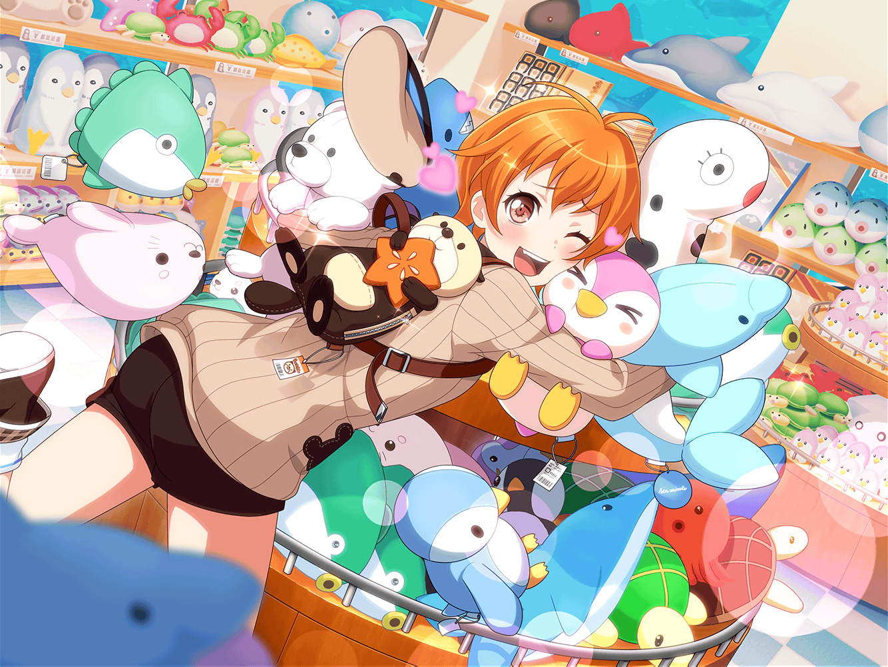

水族館 館内
花音
わ～、かわいいものがたくさんあるね
美咲
そうですね。
やっぱり、こういうお土産コーナーに来ると、
水族館に来たって感じするよね
はぐみ
いろんなもの眺めてるだけで、楽しいよね！
花音
ぬいぐるみは、えっと……あ、あった
はぐみ
かのちゃん先輩は何か買うの？
花音
せっかくだから、
ペンギンさんのぬいぐるみ買いたいなって思ったんだ
はぐみ
いいと思う！
かのちゃん先輩、すごい仲良しだったし！
美咲
そうだね。花音さんらしいって感じがするよね
花音
けど、ペンギンさんのぬいぐるみってたくさんあるね……
ポーズとか大きさとか素材が違ってて、悩んじゃうな……
美咲
ホントだ。いろんなのがあるんですね
花音
うーん、どれがいいかな……
はぐみ
確かにたくさん種類あるけど……
ぬいぐるみはやっぱり顔だと思うな！
美咲
ぬいぐるみの……顔？
はぐみ
うん！ ぬいぐるみって１つ１つ顔が違うんだよ！
だから、顔をよーっく見て、一番気に入ったやつを
選べばいいんじゃないかな？
花音
そ、そんなに違うものなのかな……？
……あ！ これ、ペンちゃんに似てるかも！
はぐみ
ホントだー！
はぐみ
丁度抱っこできるくらいだし、
大きすぎないからお部屋に置きやすそうだよ！
花音
うん……確かに……
はぐみ
それになんと言っても……この触り心地！
ふわふわしてて気持ち良いよ！
花音
あ、ホントだ！
……ペンちゃんを抱っこしてるみたい！
私、これ買って行こうかな
花音
はぐみちゃん、ありがとね
はぐみ
えへへ～、かのちゃん先輩が喜んでくれて良かった！
美咲
はぐみ、通販番組の人みたいだったよ
はぐみ
え、そうかな？ それってすごいこと？
美咲
あーうん、すごいと言えばすごいかも？
はぐみ
そっか、やったー！
はぐみ、こういうの選ぶのすっごい好きなんだ！
花音
あ、美咲ちゃんも何か買うなら、
はぐみちゃんに探してもらうのはどうかな？
美咲
そうですね。あたしは……妹に何か買って行きたいな。
やっぱり、お菓子とかがいいかなあ
はぐみ
妹ちゃんにだね！
そうしたら、クッキーなんてどうかな？
お魚の形したやつとか、すっごいかわいいよ！
美咲
確かにいいかも。妹クッキー好きだし……
うん、これにしよ。
ありがとね、はぐみ
はぐみ
えへへ、みーくんが喜んでくれたら、
はぐみもうれしー！
花音
はぐみちゃん、ホントにすごいね！
私と美咲ちゃんのお土産あっという間に決まっちゃったよ
美咲
それで、はぐみは何か買って行かないの？
はぐみ
はぐみはねー、これにしようと思ってたんだっ！
花音
それって……ラッコのリュックサック？
美咲
あー、確かに、はぐみに良く似合ってるかも。
はぐみらしいって感じするね
はぐみ
みーくん、ホント？
じゃあ、はぐみこれ買って行く！
はぐみ
えへへ！
はぐみらしいって言われたの、とっても嬉しかったし！
はぐみ
じゃあ、みんなでレジに行こー！
花音
はぐみちゃんって、実は女の子らしいよね
美咲
レジにはダッシュで向かっていきましたけどね……
花音
私、思ったんだけど……
ハロハピで一番女の子らしいのは、
はぐみちゃんなんじゃないかなって、思ったんだ
美咲
た、確かにそうかも……